Mergulhando nos
Ecossistemas do Brasil:
Conheça Sobre os
Fundos Vegetados Submersos
Catharina alvarez
Eduarda medeiros
Laura aquino prezoto
weverson candido

O que são os fundos vegetados submersos?
Os fundos vegetados submersos são jardins subaquáticos formados por angiospermas adaptadas à vida no mar. São altamente produtivos, abrigam uma rica biodiversidade, fornecem alimento e abrigo para diversas espécies, purificam a água e protegem a linha de costa.
os fundos vegetados são compostos de espécies vegetais aquáticas como pradarias e algumas algas. Assim abrigando grande parte da biodiversidade marinha, esses ecossistemas se distribuem ao longo do litoral brasileiro de maneira distintas e conforme as condições de clima e ambiente.
- Consulte o glossário para termos técnicos

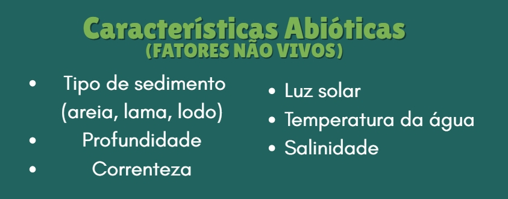
Distribuição
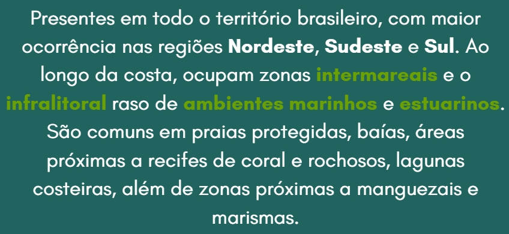
Adaptações morfofisiológicas
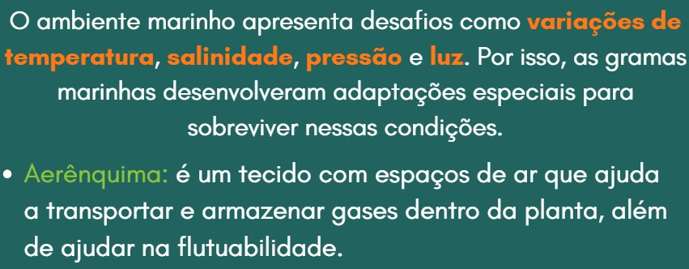
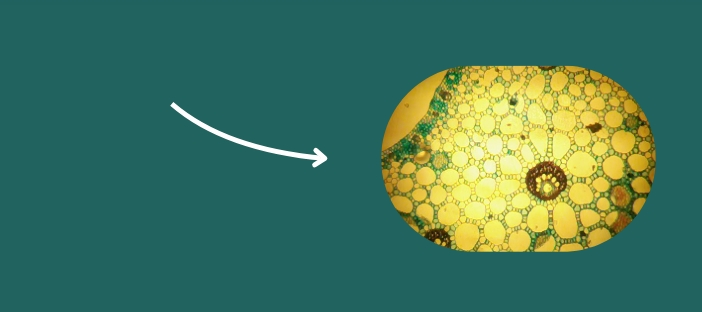
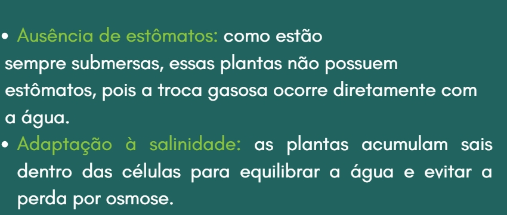
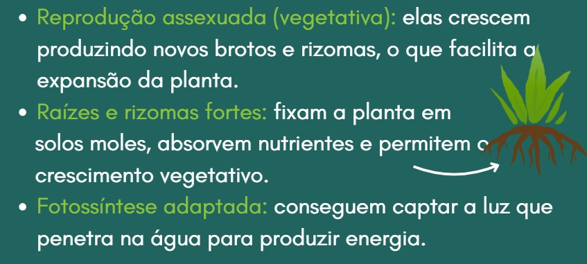
Figura 1: gramas marinhas
Impotância
- Controle de erosão
- Estabilização dos sedimentos
- Mitigar os efeitos das mudanças climáticas
- Absorção do CO2 do mar e armazenamento no tecido ou sedimento
- Manutenção do pH
- Atua na prevenção da acidificação do oceano
- Peixes, moluscos, tartarugas, entre outros
- Pesca, turismo subaquáticoa, produção de fertilizantes, matéria-prima para produtos cosméticos e farmacêuticos
.Berçário e abrigo para espécies
.Econômica
Captação de carbono e fotossíntese em um prado de ervas marinhas.

Espécies chaves dependentes dos prados
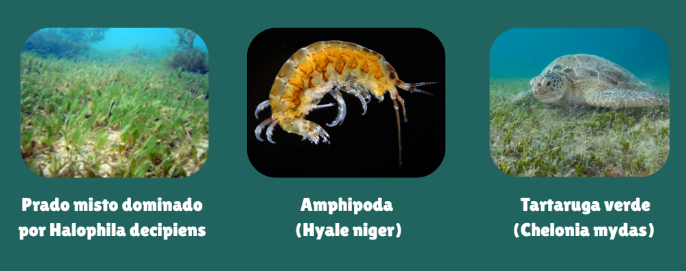
Curiosidades Marinhas
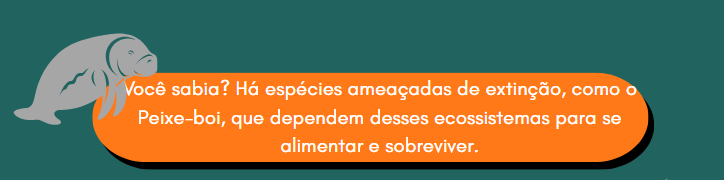
Variedade de espécies e fisiologia
Pradarias marinhas no sedimento costeiro
Pradarias marinhas no sedimento costeiro
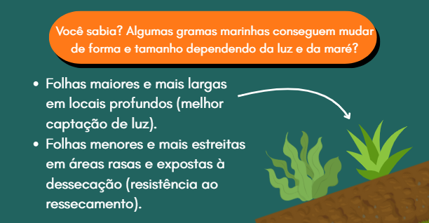
Impactos
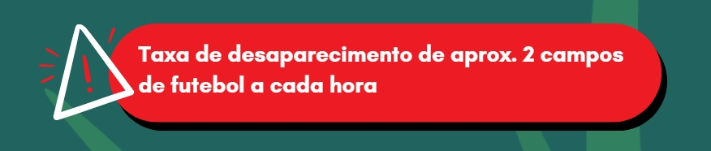
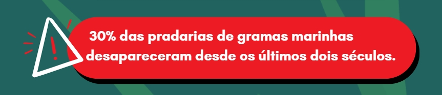
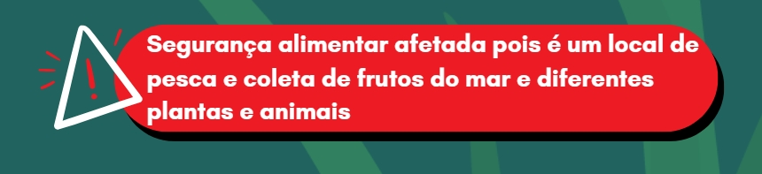
Uma imersão neste ecossistema
Pressões
Poluição da Água:
esgoto doméstico e industrial, produtos químicos e fertilizantes usados na agricultura. Impede a luz do sol de chegar às plantas
Eutrofização:
podem causar o crescimento excessivo de algas, que sufocam as pradarias Descarte inadequado de plásticos e químicos na água.
Alterações Climáticas:
o aumento da temperatura da água do mar e a acidificação dos oceanos. Dificulta o crescimento das plantas podendo levar a morte Afeta a quantidade de oxigênio na água.
Atividades Humanas na Costa:
a construção de portos, e outras infraestruturas costeiras, pesca desordenada, pesca de arrasto Podem arrancar e danificar as plantas marinhas.
Espécies Invasoras:
muitas vezes são trazidos por navios, na água de lastro Competem com espécies nativas, causando desequilíbrio
Mitigação
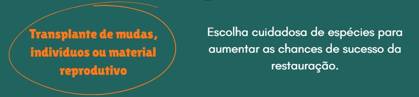
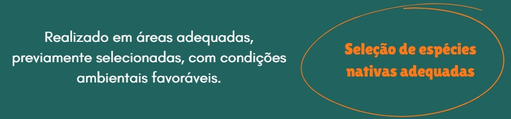
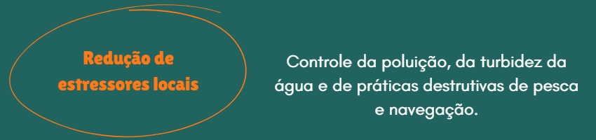
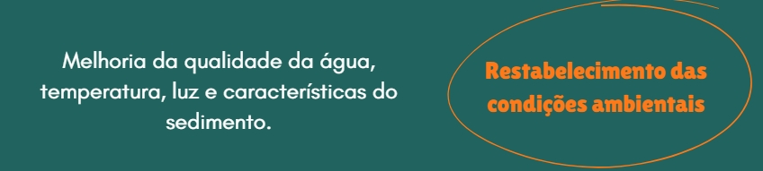
Preservação dos fundos vegetados submersos
Ameaças evidentes
- Poluição por plásticos (8 milhões de toneladas/ano)
- Pesca predatória e excessiva
- Acidificação dos oceanos (absorvem 30% do CO2)
- Mudanças climáticas (aumento da temperatura)

Como Ajudar?
Reduza o uso de plástico, consuma peixe de forma sustentável, participe de limpezas de praia e divulgue informações sobre a importância das pradarias marinhas!
Conclusão
Os fundos vegetados, são essenciais para os ecossistemas costeiros, oferecendo importantes serviços ecossistêmicos, como purificação da água, abrigo para espécies e sequestro de carbono. Apesar de sua capacidade autopoiética, que garante sua autorregulação e regeneração, esses ambientes estão sob crescente ameaça das atividades humanas. Proteger essas áreas é fundamental para garantir o equilíbrio ecológico e a continuidade dos benefícios que proporcionam à sociedade.
Referências:
- MARQUES, Lenardo; CREED, Joel. Biologia e Ecologia das Fanerógamas marinhas do Brasil. Oecologia Brasiliensis, v. 12, n. 2, 2008. Disponível em: https://doi.org/10.4257/oeco.2008.1202.12. Acesso em: 5 jul. 2025.
- OCEAN ALIVE. Pradarias marinhas. [s.d.]. Disponível em: https://www.ocean-alive.org/pradarias-marinhas. Acesso em: 11 jul. 2025.
- PARA JOVENS. Jardins secretos sob o mar: o que são os prados de ervas marinhas e qual a sua importância? Disponível em: https://parajovens.unesp.br/jardins-secretos-sob-o-mar-o-que-sao-os-prados-de-ervas-marinhas-e-qual-a-sua-importancia/. Acesso em: 5 jul. 2025.
- PARDAL, A. Cidades azuis: soluções baseadas na natureza para a resiliência climática costeira. Disponível em: https://www.researchgate.net/profile/Andre-Pardal/publication/386983821_Cidades_Azuis_Solucoes_baseadas_na_Natureza_para_a_Resiliencia_Climatica_Costeira/links/675b19868a08a27dd0ba3ec8/Cidades-Azuis-Solucoes-baseadas-na-Natureza-para-a-Resiliencia-Climatica-Costeira.pdf. Acesso em: 5 jul. 2025.
- RTP. Pradarias marinhas: um ecossistema pulmão do planeta. Ensina RTP, [s.d.]. Disponível em: https://ensina.rtp.pt/artigo/pradarias-marinhas-um-ecossistema-pulmao-do-planeta/. Acesso em: 11 jul. 2025.
- TURRA, A. (org.). Capítulo 3 – Ecossistemas costeiros e marinhos: estratégias para conservação e uso sustentável. In: —. Soluções baseadas na natureza para o Brasil: recomendações para políticas públicas. São Paulo: Instituto Oceanográfico da USP, 2022. Disponível em: https://books.scielo.org/id/x49kz/pdf/turra-9788598729251-03.pdf. Acesso em: 5 jul. 2025.
- TURRA, A. (org.). Monitoramento dos fundos vegetados submersos: metodologias aplicadas às ervas marinhas e bancos de algas no Brasil. São Paulo: Instituto Oceanográfico da USP, 2022. Disponível em: https://d1wqtxts1xzle7.cloudfront.net/105629834/9788598729251-libre.pdf. Acesso em: 5 jul. 2025.
- TERRAMAR. Oceano do futuro: relatório do IPCC sobre o oceano e a criosfera em um clima em mudança. Cooperação Brasil-Alemanha, 2020. Disponível em: https://cooperacaobrasil-alemanha.com/TerraMar/OceanoDoFuturoIPCC.pdf. Acesso em: 11 jul. 2025.